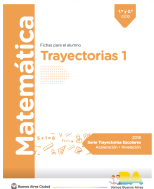
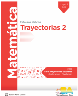

| Contenido Curricular | Material | Apartado y Fichas |
|---|---|---|
| Lectura y escritura de números de tres, cuatro y cinco cifras. | Trayectorias 1  |
Leer y escribir números de varias cifras
Ficha 1: Números más o menos conocidos. Parte I
Ficha 2: Números más o menos conocidos. Parte II
Ficha 3: Números más o menos conocidos. Parte III
Ficha 4: Uno más y uno menos
Ficha 5: Los de mil. Parte I
Ficha 6: Los de mil. Parte II
Ficha 7: Los de mil. Parte III
Ficha 8: Un juego con cartas para armar números de 4 cifras
Ficha 9: Para después de jugar II
Ficha 10: Los "dieces" de los miles. Parte I
Ficha 11: Los "dieces" de los miles. Parte II
|
| Análisis del valor posicional de las cifras. | Trayectorias 1 |
Los números escritos y el valor de sus cifras: los agrupamientos de 10, 100, 1000
Ficha 1: Problemas con billetes. Parte I
Ficha 2: Problemas con billetes. Parte II
Ficha 3: Juego de dados mágicos. Parte I
Ficha 4: Juego de dados mágicos. Parte II
Ficha 5: Juego con cuatro dados mágicos
Ficha 6: Para después de jugar con los dados
Ficha 7: Problemas más difíciles con billetes. Parte I
Ficha 8: Problemas más difíciles con billetes. Parte II
Ficha 9: Problemas más difíciles con billetes. Parte III
Ficha 10: Juego de cartas que valen 10, 100, 1000
Ficha 11: Para después de jugar II
Ficha 12: Billetes de 10, 100, 1.000 y cálculos. Parte I
Ficha 13: Billetes de 10, 100, 1000 y cálculos. Parte II
Ficha 14: Billetes de 10, 100, 1000 y cálculos. Parte III
Ficha 15: Usar cálculos para desarmar números
Ficha 16: Cálculos usando 100. Parte I
Ficha 17: Cálculos usando 100. Parte II
Ficha 18: Con la calculadora...
|
| Cálculo mental de suma y resta: repertorio y estrategias. | Trayectorias 1 |
Cálculos fáciles (y no tan fáciles) de suma y resta
Ficha 1: La tabla de sumas
Ficha 2: Usar cálculos conocidos para resolver otros. Parte I
Ficha 3: Usar cálculos conocidos para resolver otros. Parte II
Ficha 4: Usar cálculos conocidos para resolver otros. Parte III
Ficha 5: Usar cálculos conocidos para resolver otros. Parte IV
Ficha 6: Juego: "Armar el número clave"
Ficha 7: Para despúes de jugar II
Ficha 8: Adivinanzas y cálculos escritos
Ficha 9: Distintas formas de resolver sumas. Parte I
Ficha 10: Distintas formas de resolver sumas. Parte II
Ficha 11: Resolver cálculos de resta usando otras restas
Ficha 12: Restar números redondos
Ficha 13: Resolver restas usando sumas. Parte I
Ficha 14: Resolver restas usando sumas. Parte II
Ficha 15: Restar por partes...
Ficha 16: Estimar resultados de sumas
Juegos y cuadros para repasar y memorizar cálculos de suma
Ficha 1: Cálculos para aprender de memoria
Ficha 2: Un juego: lo mío, lo tuyo, lo nuestro
Ficha 3: Para hacer después de jugar II
Ficha 4: Repasamos sumas conocidas I
Ficha 5: Repasamos sumas conocidas II
Ficha 6: El juego de las pirámides de sumas
Cálculos de restas fáciles y no tan fáciles...
Ficha 1: Un juego en el patio de baldosas
Ficha 2: Restas fáciles y difíciles
Ficha 3: Pensar sobre cálculos de resta
Ficha 4: El 1 en las cuentas de restar
Adivinanzas, cuadros y juegos para completar sumas
Ficha 1: Adivinanzas y sumas incompletas
Ficha 2: Un juego: armar números "redondos"
Ficha 3: Para despues de jugar II
Nuevos trucos para resolver cálculos de resta
Ficha 1: Usar sumas para restar I
Ficha 2: Usar sumas para restar II
Ficha 3: Restar de a diez
Ficha 4: Restar de a diez, de a cien y restar números redondos
Ficha 5: Restar números redondos
Ficha 6: Un juego para restar
Ficha 7: Restar usando los miles
Ficha 8: Juegos de pirámides
|
| La construcción del algoritmo de la resta. |
La cuenta de restar
Ficha 1: Problemas de billetes I
Ficha 2: Problemas de billetes II
Ficha 3: Juego del Tutti Frutti
Ficha 4: La cuenta de restar I
Ficha 5: La cuenta de restar II
Ficha 6: La cuenta de restar III
|
|
| Análisis de la información en enunciados de problemas. | Trayectorias 1 |
Las informaciones y las preguntas de los problemas
Ficha 1: Problemas, preguntas y datos. Parte I
Ficha 2: Problemas, preguntas y datos. Parte II
Ficha 3: Problemas para resolver. Parte I
Ficha 4: Problemas para resolver. Parte II
|
| Multiplicación: Series proporcionales y relación con la suma. | Trayectorias 1 y 2  |
La suma y la multiplicación
Ficha 1: Cuándo usar la suma y cuándo usar la multiplicación
Ficha 2: Problemas y cálculos
Ficha 3: ¿Qué cálculo sirve?
Ficha 4: Relaciones entre la suma y la multiplicación
Ficha 5: Más problemas... ¿suma o multiplicación?
Ficha 6: Relaciones entre cálculos y problemas
Ficha 7: Problemas con facturas
Ficha 8: Problemas con tablas
Ficha 9: Armar tablas con multiplicación
Ficha 10: Usar resultados de las tablas para los problemas
La multiplicación en problemas con tablas y facturas
Ficha 1: Completar facturas. Parte I
Ficha 2: Completar facturas. Parte II
Ficha 3: Facturas y cálculos. Parte I
Ficha 4: Completar tablas
Ficha 5: Facturas y cálculos. Parte II
|
| Multiplicación: Memorización de repertorios y relaciones. | Trayectorias 2 |
Para recordar multiplicaciones...
Ficha 1: Recordar resultados...
Ficha 2: Multiplicar por números redondos. Parte I
Ficha 3: Multiplicar por números redondos. Parte II
Ficha 4: Multiplicar números redondos grandes
Ficha 5: Relacionar resultados
Ficha 6: Multiplicar x2, x4 y x8
Ficha 7: Tabla Pitagórica para buscar resultados
Ficha 8: Resultados que ayudan
Ficha 9: Trucos para recordar resultados...
|
| Multiplicación: Números mayores y filas/columnas. | Trayectorias 1 y 2 |
El cálculo de multiplicación
Ficha 1: La tabla pitagórica
Ficha 2: Usar la tabla para buscar...
Ficha 3: Dobles y mitades. Parte I
Ficha 4: Dobles y mitades. Parte II
Ficha 5: Relaciones entre multiplicaciones
Ficha 6: Multiplicar por unidad seguida de ceros
Nuevos problemas para usar la multiplicación: filas y columnas
Ficha 1: Patios, baldosas y cálculos. Parte I
Ficha 2: Patios, baldosas y cálculos. Parte II
Ficha 3: Armar cálculos a partir de dibujos
Ficha 4: Problemas en el cine
Ficha 5: Resolver problemas y escribir el cálculo
Ficha 6: El juego de la escoba del 15
Ficha 7: Dibujar rectángulos
Ficha 8: Rectángulos y cálculos. Parte I
Ficha 9: Rectángulos y cálculos. Parte II
Multiplicaciones de números mayores
Ficha 1: Multiplicaciones de números mayores por números "redondos". Parte I
Ficha 2: Multiplicaciones de números mayores por números "redondos". Parte II
Ficha 3: El juego del 1000
Ficha 4: Cuentas para multiplicar. Parte I
Ficha 5: Cuentas para multiplicar. Parte II
Ficha 6: Cuentas para multiplicar. Parte III
|
| División: Resolución de problemas de reparto y partición. | Trayectorias 2 |
Repartos y particiones
Ficha 1: Adivinanzas con cálculos
Ficha 2: Adivinar el resultado...
Ficha 3: ¿Alcanza justo o sobra?
Ficha 4: Repartir en partes iguales
Ficha 5: A veces sobra... Parte I
Ficha 6: A veces sobra... Parte II
Ficha 7: A veces sobra... Parte III
Ficha 8: Resto cero y distinto de cero
Ficha 9: A veces sobra... Parte IV
|
| División: Construcción del algoritmo (1 y 2 cifras). | Trayectorias 2 y 3 |
Dividir números mayores
Ficha 1: ¿Más que... o menos que? Parte I
Ficha 2: ¿Más que... o menos que? Parte II
Ficha 3: Divisiones con 10, 100, 1000
Ficha 4: ¿Cuántas veces...?
Ficha 5: Estimar y dividir
Ficha 6: El juego de aproximar...
Estrategias de cálculo para dividir: cuentas nuevas
Ficha 1: Dividir por partes... Parte I
Ficha 2: Dividir por partes... Parte II
Ficha 3: Analizar cuentas de dividir
Ficha 4: Cuentas con números grandes. Parte I
Ficha 5: Cuentas con números grandes. Parte II
Ficha 6: Cuentas con números grandes. Parte III
El cálculo de división
Ficha 1: Usar multiplicaciones para resolver divisiones
Ficha 2: Multiplicar y dividir
Ficha 3: Estimar resultados... Parte I
Ficha 4: Estimar resultados... Parte II
Ficha 5: Resultados más y más "ajustados"
|
| División: Análisis del resto en diversos problemas. | Trayectorias 2 y 3 |
Repartos y particiones
Ficha 1: Adivinanzas con cálculos
Ficha 2: Adivinar el resultado...
Ficha 3: ¿Alcanza justo o sobra?
Ficha 4: Repartir en partes iguales
Ficha 5: A veces sobra... Parte I
Ficha 6: A veces sobra... Parte II
Ficha 7: A veces sobra... Parte III
Ficha 8: Resto cero y distinto de cero
Ficha 9: A veces sobra... Parte IV
Estrategias de cálculo para dividir: cuentas nuevas
Ficha 1: Dividir por partes... Parte I
Ficha 2: Dividir por partes... Parte II
Ficha 3: Analizar cuentas de dividir
Ficha 4: Cuentas con números grandes. Parte I
Ficha 5: Cuentas con números grandes. Parte II
Ficha 6: Cuentas con números grandes. Parte III
Las "partes" de la división: Dividendo, divisor, cociente y resto
Ficha 1: Las "partes" de la cuenta de dividir
Ficha 2: Cuando el resto es un problema. Parte I
Ficha 3: Cuando el resto es un problema. Parte II
Ficha 4: ¿Cómo funciona la cuenta de dividir? Parte I
Ficha 5: ¿Cómo funciona la cuenta de dividir? Parte II
Ficha 6: ¿Cómo funciona la cuenta de dividir? Parte III
|